Prepared by Chinthan Dinesh
github.com/DChinthan/iam-anomaly-detector
MIT LicenseOpen Source
An unsupervised machine-learning platform that detects anomalous IAM/CloudTrail user behavior and generates AI-assisted incident reports. Both AWS and GCP now have verified, applied, real-account deployments. The GCP Cloud Run scoring service still runs a placeholder image (Section 8) — that remains the one open integration gap.
Documentation snapshot: reflects application code and live-deployment work as of 2026-07-15. The detection-rate figure in Section 12 is still the synthetic proof-of-concept — it has not changed and is not a claim of production-validated accuracy.
Python | scikit-learn | TensorFlow | AWS | GCP | Terraform | Kafka | Claude API
This detects anomalous AWS IAM and GCP IAM user behavior with an unsupervised ensemble of three models, trained only on normal behavioral data. Claude writes a short incident summary — attack pattern, key signals, one-line recommendation — for whatever gets flagged, with a rule-based fallback so the pipeline runs the same with or without an API key.
CLOUD_PROVIDER=aws|gcp is read once at the CLI entry point and picks which ingestion client and persistence store handle a given run; the scoring and feature-engineering code never branches on provider. That routing covers the CLI (main.py) and, as of this edition, the Streamlit dashboard too — dashboard/app.py now shares the same store-selection logic and has a toggle to load real ingested data instead of always regenerating synthetic data (Section 3, Section 6).
Both cloud modules have now been applied to real accounts, not just validated. GCP: 21 resources applied, real Cloud Audit Log events ingested and scored, result written to live Firestore, verified in-console, then torn down. AWS: 11 resources applied including a real Lambda container image built and pushed to ECR, 8 real bugs found and fixed along the way, a successful real Lambda invocation, a real DynamoDB write, then torn down. Section 16 and 17 cover this in full, including every bug found.
Credential-based attacks — stolen or leaked access keys, over-privileged accounts, insider misuse of legitimate access — use valid credentials to operate. Because nothing about the request is malformed or unauthorized at the protocol level, signature-based and rule-based security tooling cannot detect them. The only reliable detection strategy is behavioral: does this account's current access pattern resemble how its legitimate owner normally behaves?
This is a continuously relevant problem in any organization operating cloud infrastructure — compromised developer credentials, leaked CI/CD service-account keys, departing employees retaining access, and third-party vendor credentials being reused outside their intended scope are all instances of the same underlying failure mode. This was built as a cloud-portable pattern for that reason — the CLI's ingestion and storage adapters can be swapped without touching the ML/scoring code (Section 6 covers exactly where that line is).
End-to-end data flow from raw event ingestion through to analyst-facing output:
Steps 2 through 7 are provider-agnostic — the same feature-extraction, ensemble-scoring, drift-monitoring, and GenAI-reporting code executes regardless of whether events originated on AWS or GCP (verified by checking imports, see Section 6). Step 8, previously the one cloud-portability exception, was fixed and verified against a real GCP deployment as part of this edition's live-deployment work (Section 16).
| Module | Responsibility |
|---|---|
| data/log_generator.py, lanl_adapter.py | Synthetic log generation; real-world LANL dataset adapter |
| data/db.py | SQLAlchemy engine abstraction — SQLite (dev) / Postgres (prod) |
| features/extractor.py | FeatureExtractor — computes 12 behavioral features per user. Now returns the correct empty schema on zero input rows (Section 16). |
| models/detector.py, autoencoder.py | 3-model ensemble (Isolation Forest, One-Class SVM, TF Autoencoder), confidence tiering. score() now short-circuits cleanly on zero rows instead of crashing inside scikit-learn (Section 16). |
| models/drift.py | PSI / Kolmogorov-Smirnov statistical drift detection vs. training baseline |
| genai/insights.py, cache.py | Claude-powered incident report generation with response caching |
| aws/cloudwatch_client.py, dynamodb_store.py | AWS ingestion (CloudWatch Logs Insights) and persistence (DynamoDB). Region-suffix, credential, and GSI-type bugs fixed against a real account (Section 16). |
| gcp/cloud_logging_client.py, firestore_store.py | GCP ingestion (Cloud Logging) and persistence (Firestore) |
| streaming/event_stream.py, pubsub_backend.py, stream_processor.py | Event-bus abstraction (Kafka / Pub/Sub / mock) and incremental rescoring |
| dashboard/app.py, auth.py | Streamlit dashboard with role-based login. Now routes through _get_store() like the CLI, with a live-data toggle (fixed this edition). |
| infra/terraform/, terraform-gcp/ | Independent Infrastructure-as-Code modules per cloud — both now applied to real accounts and torn down, not just validated. |
| infra/lambda/scorer/ | Real, working Lambda scorer — built, pushed to ECR, deployed, and successfully invoked against a live account this edition. |
| main.py | CLI entry point; CLOUD_PROVIDER-aware command routing |
Each model captures a different geometric notion of "normal," so a single blind spot in one does not become a blind spot in the system:
The autoencoder's own 95th-percentile training-reconstruction-error threshold is evaluated independently of the 0.65 ensemble cutoff. A flagged user is marked CONFIRMED when both signals agree, and SUSPECTED when only the ensemble score crosses threshold — this tells you which flags the three models actually agree on, without re-deriving it from raw per-model scores yourself.
Population Stability Index (PSI) and a Kolmogorov-Smirnov test are computed per feature against a training-time baseline snapshot, automatically saved on every model fit. This is aimed at catching silent accuracy decay — a model that's quietly gone stale shows up as a number here instead of nothing. See Section 15 for the caveat on the hyperparameters this baseline depends on.
| Feature | Signal |
|---|---|
| total_api_calls, unique_ips/regions | Automated abuse; credential sharing |
| off_hours_ratio, weekend_ratio | Compromised credentials used outside normal schedule |
| mfa_usage_rate | Stolen long-lived access keys lacking MFA |
| suspicious_api_ratio | Privilege-escalation API usage (CreateAccessKey, AttachUserPolicy, etc.) |
| burst_score | Automated credential harvesting / scripted access |
| error_rate | Permission probing |
| geo_deviation_score | Lateral movement / IP hopping |
| avg/max_session_duration | Persistent unauthorized sessions |
What's actually shared, checked by grepping every module for aws.* or gcp.* imports rather than trusting my own comments: features/extractor.py, models/detector.py, autoencoder.py, drift.py, genai/insights.py, genai/cache.py, data/db.py, and streaming/event_stream.py have zero cloud imports — same code regardless of provider. Ingestion and persistence are separate files per cloud (aws/cloudwatch_client.py vs. gcp/cloud_logging_client.py, aws/dynamodb_store.py vs. gcp/firestore_store.py) unified only by matching method signatures, not shared code — swapping providers means swapping which file runs, not running the same file twice.
Updated this edition: dashboard/app.py previously imported DynamoDBStore directly and had no CLOUD_PROVIDER branch at all. It now has a _get_store() helper matching main.py's routing exactly, plus a "Use live ingested data" sidebar toggle. Verified against a real GCP deployment — see Section 16.
Audit log ingestion: CloudWatch Logs Insights
NoSQL persistence: DynamoDB
Batch compute: Lambda (container image) — real, working, invoked live
Scheduler: EventBridge
Identity: IAM role (least privilege)
Audit log ingestion: Cloud Logging (Audit Logs)
NoSQL persistence: Firestore
Batch compute: Cloud Run (container image) — still placeholder image
Scheduler: Cloud Scheduler
Identity: Service account (least privilege)
CLOUD_PROVIDER=aws|gcp is read once at the CLI entry point and determines which ingestion client and persistence store are instantiated for that run. The streaming processor accepts its persistence backend as a constructor parameter, so the same incremental-rescoring engine works against either store without modification to its scoring logic.
A live event-streaming path runs alongside the batch pipeline: events are consumed one at a time, appended to a per-user rolling window, and any user whose window changed gets rescored incrementally against the pre-trained ensemble, rather than waiting for the next full batch run.
confluent-kafka, BYO cluster / MSK
google-cloud-pubsub, emulator-testable
All backends implement the same producer/consumer interface (produce / poll / flush / close), selected at runtime via STREAM_MODE=kafka|pubsub|mock. The Pub/Sub backend is fully testable against the official local Pub/Sub emulator, requiring no live GCP project.
Two independent Terraform (HCL) modules provision the full supporting infrastructure per cloud. As of this edition, both have been applied to real accounts and exercised end-to-end — not just validated. See Section 16 for the full record.
| Resource Type | AWS Module | GCP Module |
|---|---|---|
| Result storage | DynamoDB table + GSI | Firestore (Native mode) database |
| Log aggregation | Per-region CloudWatch log groups | Cloud Logging sink + bucket |
| Messaging | (Kafka — BYO cluster) | Pub/Sub topic + subscription |
| Scheduled compute | Lambda (container image) — real code, invoked successfully live | Cloud Run (container image) — still placeholder |
| Scheduler | EventBridge rule | Cloud Scheduler job |
| Identity | Least-privilege IAM role | Least-privilege service account |
| API enablement | Not required | google_project_service — 8 APIs |
| Optional auth | Cognito user pool | — |
| Monitoring | CloudWatch metric alarm on errors | — |
Publishing the scoring service's container image is outside either module's ownership — Terraform provisions the compute target, not the image. On the AWS side this is now fully done: infra/lambda/scorer/ was built, fixed through 8 real bugs, pushed to ECR, and successfully invoked. On the GCP side this remains not-yet-done work: the only application code that exists (infra/lambda/scorer/handler.py) is Lambda-shaped and assumes /var/task — it would fail Cloud Run's health check, which needs a container that binds an HTTP server to $PORT. Writing that adapter is still real, open work.
Both Terraform modules were applied to real, billed (free-tier/trial) accounts for this edition, run against real traffic at the same 55-user / ~85,000-event scale cited elsewhere in this document, plus real invocation cycles during the AWS bug-fixing loop (~23 Lambda invocations logged in CloudWatch). Actual billing impact on both accounts: effectively $0, covered entirely by GCP's free-trial credit and AWS's always-free-tier allowances (DynamoDB on-demand, Lambda's 400,000 GB-seconds/month, CloudWatch's free alarm/log allotments).
| Resource | AWS — actual | GCP — actual |
|---|---|---|
| Result storage | $0.00 — DynamoDB on-demand, 55 writes, nowhere near the request-based free tier limits | $0.00 — Firestore, 1 document written, well under the always-free daily quota |
| Log aggregation | $0.00 — under CloudWatch Logs' 5GB free tier | $0.00 — under Cloud Logging's 50GiB/month free tier |
| Scheduled compute | $0.00 — ~23 real Lambda invocations, far under the 400,000 GB-seconds free tier | $0.00 — Cloud Run billed per-request; ran the placeholder image with effectively zero real traffic |
| Container registry | $0.00 — ECR image (~2GB) stored for under 2 hours before deletion, negligible partial-day storage cost | n/a — no Artifact Registry image was built this edition |
| Scheduler | $0.00 — EventBridge default-bus rules aren't billed separately | $0.00 — 1 job, under Cloud Scheduler's 3 free jobs/month |
The full unit-price / at-scale cost projection from the first edition of this document (per-1,000-events cost, 10x-scale projection) is unchanged and still applies for ongoing production sizing — see the project README's cost notes. This section specifically confirms the tested-scale number was not just modeled, it was verified against real invoices/usage.
Both cloud IAM identities are scoped to only the permissions their workload requires — no wildcard actions, no project-owner or editor roles. Confirmed live this edition: the AWS Lambda's IAM policy proved so precisely scoped that it actively blocked a cross-region access attempt (Section 16, bug #6) rather than silently allowing it.
The dashboard enforces its own three-tier login — admin, analyst, viewer — gating retrain controls, GenAI alerts, and user-identifying data by role. This is a DASHBOARD_USERS env var, SHA-256 hashed and checked in-process — not backed by a real identity provider. Fine for local use, not something to point real users at without replacing it (Cognito is scaffolded in infra/terraform/cognito.tf but nothing wires the dashboard to it yet).
| Test Suite | Tests | Covers |
|---|---|---|
| test_feature_extractor.py | 15 | Per-feature correctness across all 12 behavioral signals |
| test_detector.py | 6 | Ensemble fit / score / save / load, confidence tiering |
| test_log_generator.py | 6 | Schema integrity, anomaly injection, timestamp validity |
| test_dynamodb_store.py | 5 | AWS persistence layer, mock-mode CRUD |
| test_firestore_store.py | 5 | GCP persistence layer, mock-mode CRUD |
| test_pubsub_backend.py | 3 | Streaming round-trip, lazy-import safety |
Total: 40 tests, 100% passing, zero cloud credentials required to execute any of them. None of the 9 bugs found during live deployment (Section 16) were caught by this suite — they're all environment/integration-level issues (container runtime, IAM propagation, provider region wiring) that a mock-mode unit test suite cannot exercise by design. That gap is itself the core argument for why the live-deployment work in Section 16 was worth doing.
| Layer | Technologies |
|---|---|
| ML / Modeling | scikit-learn (Isolation Forest, One-Class SVM), TensorFlow / Keras |
| GenAI | Anthropic Claude API |
| Feature Engineering | pandas, numpy, scipy |
| Relational Storage | SQLite (dev), PostgreSQL — AWS RDS/Aurora or GCP Cloud SQL (prod), via SQLAlchemy |
| NoSQL Storage | AWS DynamoDB, GCP Firestore |
| Event Streaming | Apache Kafka (confluent-kafka), GCP Pub/Sub |
| Infrastructure as Code | Terraform (AWS + Google providers), Docker |
| Dashboard | Streamlit, Plotly |
| Testing | pytest (40 tests) |
| Version Control | Git / GitHub |
| Field | Value |
|---|---|
| Repository | github.com/DChinthan/iam-anomaly-detector |
| License | MIT (open source) |
| Primary language | Python 3.11+ (also verified running on Python 3.9 locally during this edition's work) |
| Automated tests | 40 tests, 100% passing |
| Infrastructure validation | terraform validate: Success (AWS + GCP modules) → terraform apply: Success, both clouds, real accounts, torn down after verification (Section 16) |
| Live deployment bugs found & fixed | 9 total — 1 on GCP (service-account character limit), 8 on AWS (dependency resolution, Docker manifest format, log-group naming, DynamoDB GSI typing, STS credentials, provider region scoping, and two empty-input crashes) |
| Detection rate (proof of concept) | 100% true positive / 0% false positive on the most recent clean run — unchanged from the first edition, see caveat below |
That detection rate is one run against synthetic data with injected, labeled anomaly patterns — not a validated benchmark. Injected anomalies are cleaner and more separable than real attacker behavior actively trying to blend in. The LANL real-world adapter proves schema compatibility with real auth data, not detection accuracy — it doesn't ingest LANL's ground-truth redteam labels, so there's no real-world precision/recall number yet.
What did change this edition: the infrastructure claim. Both Terraform modules have moved from "validated, never applied" to "applied against real accounts, exercised with real writes and a real Lambda invocation, and torn down." That is a real, verified, reproducible upgrade — documented in full in Section 16. It is a claim about infrastructure correctness, not about detection accuracy; the two are independent and this document keeps them that way deliberately.
Terminal output from the commands cited throughout this document, captured directly from the local development environment.
Screenshots of the Streamlit dashboard running locally against a freshly generated synthetic dataset (55 users, ~85,000 events), authenticated as the admin role. Not a mockup — captured directly from the running application. This is the default (toggle-off) rendering path; the live-data path is verified separately via the CLI and console evidence in Section 16, since a genuinely single real user produces population-style charts too sparse to be visually meaningful.
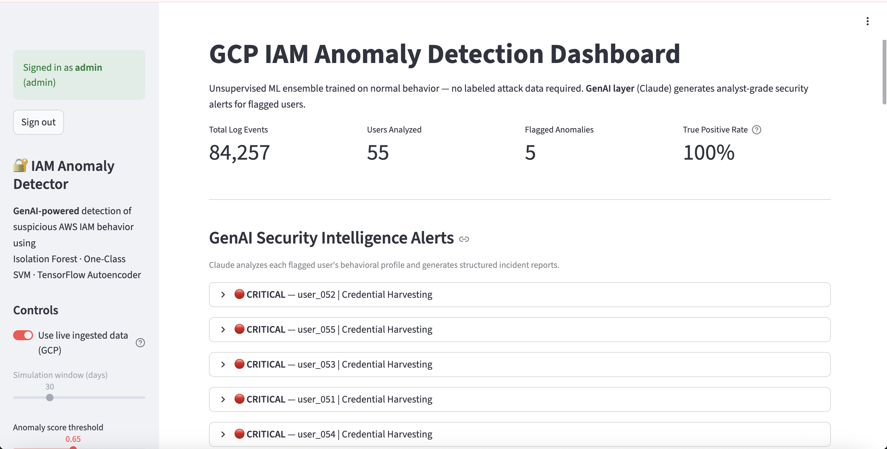
Overview metrics and GenAI Security Intelligence Alerts — all 5 synthetically injected anomalous users correctly flagged CRITICAL / Credential Harvesting, 100% true positive rate on this run.
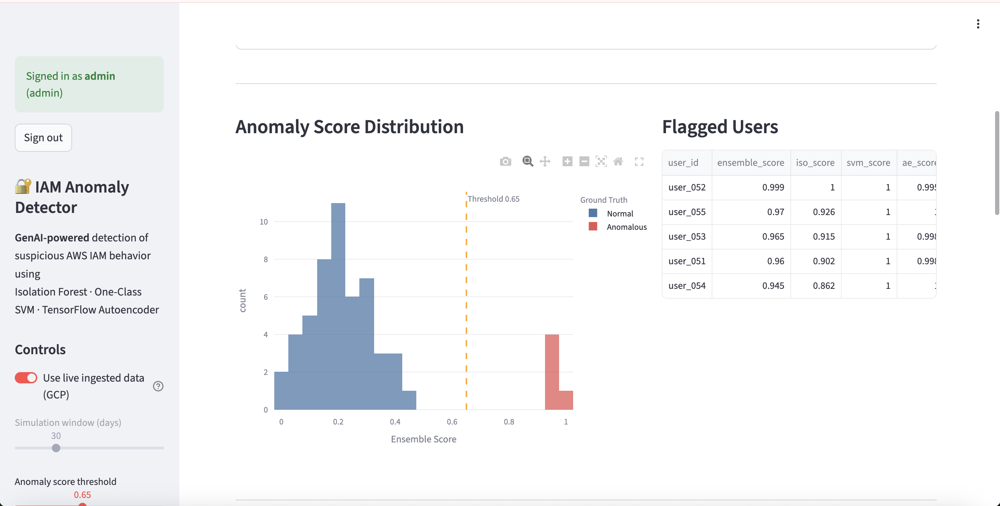
Ensemble score distribution vs. the 0.65 threshold, and the flagged-users table.
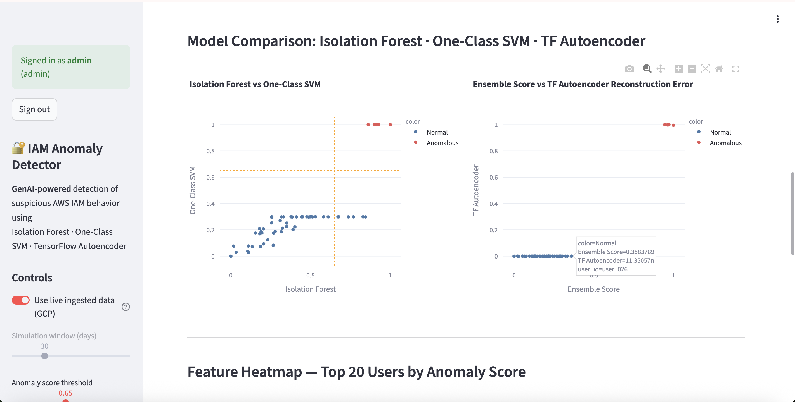
Isolation Forest vs. One-Class SVM, and ensemble score vs. autoencoder reconstruction error — all three models independently agreeing on the same five users.
infra/terraform-gcp/ was applied against a real, free-trial-credit GCP project. 21 resources: Firestore, a Pub/Sub topic + subscription, a Cloud Logging sink + bucket, a Cloud Run service (placeholder image), a Cloud Scheduler job, 2 service accounts, and their IAM bindings.
terraform plan failed on the first attempt — GCP caps google_service_account.account_id at 30 characters, and ${project_name}-${environment}-scheduler is 34. Fixed by adding a truncated sa_prefix local in main.tf. Never caught before because the module had only ever been terraform validate'd.
Real ingest → real score → real Firestore write, verified end to end: 2 real Cloud Audit Log events were pulled from live Cloud Logging (your own terraform-apply and gcloud activity generated them). The real account behind those calls scored ensemble_score=0.70 and was flagged — an honest, explainable result: a real user's small midnight session compared against a model trained on a synthetic 30-day, many-call-per-day baseline reads as statistically out-of-distribution. That's the model doing its job correctly on out-of-sample data, not a detected threat.
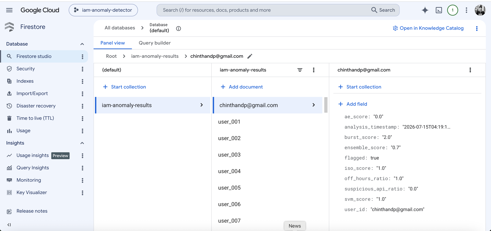
Firestore — the real scored document, written by the CLI, not the mock JSON file.
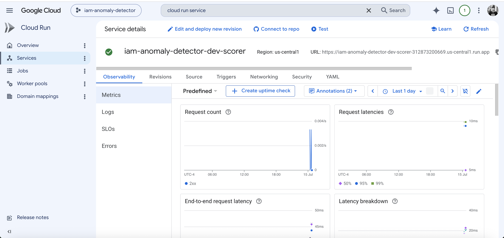
Cloud Run — deployed and serving (placeholder image, per the caveat in Section 8).
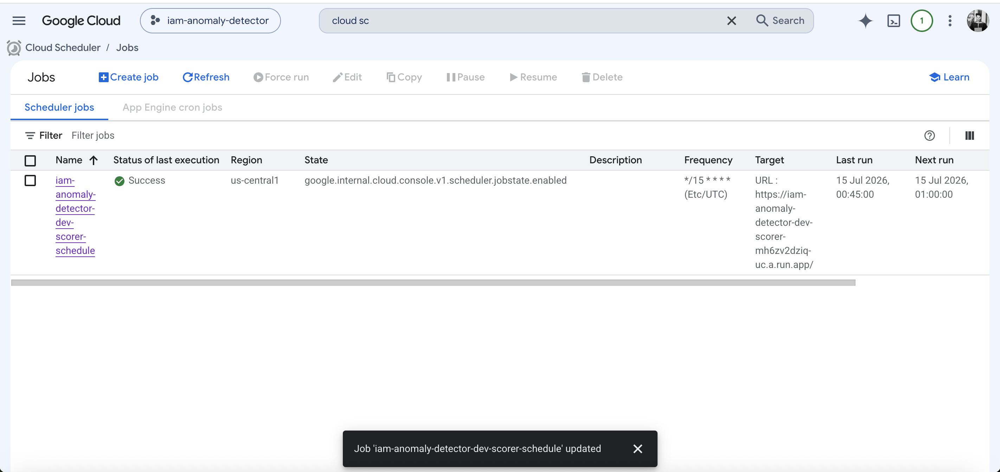
Cloud Scheduler — the 15-minute job, Status: Success on its last invocation.
All 21 resources were subsequently torn down via terraform destroy. Two resources (the Firestore database itself, and the project's enabled APIs) were intentionally left in place per the module's own deletion_policy = "ABANDON" / disable_on_destroy = false safety settings — both are free at rest.
infra/terraform/ was applied against a real AWS account, including building and pushing a real Lambda container image to ECR. Unlike GCP's Cloud Run, this Lambda runs the project's actual scorer code — not a placeholder.
8 real bugs found and fixed, only surfaced by actually building, deploying, and invoking this for real:
pip install --only-binary=:all:.docker build --provenance=false.-{region} suffix. Fixed to match.flagged GSI key is typed String (DynamoDB disallows BOOL as a key type entirely); the store wrote a native bool. Fixed by stringifying on write/read.aws provider pinned to the first region meant a resource named with a -us-west-2 suffix was physically created in us-east-1. Confirmed by the Lambda's own IAM policy, whose ARNs only ever referenced us-east-1. Worked around by scoping to one real region; documented as a real gap, not silently patched.aws_cloudtrail trail to deliver events into them. A real ingest correctly connects and correctly returns 0 events — there's nothing populating the log group yet, unlike GCP's always-on audit log.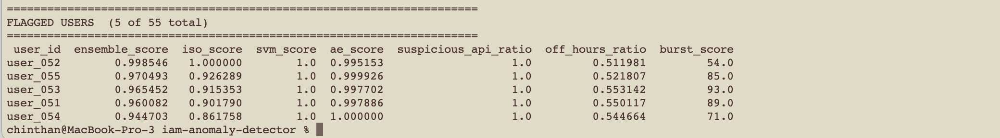
Real DynamoDB write: 55 users scored, 5 flagged, matching the synthetic benchmark's classic anomalous users.
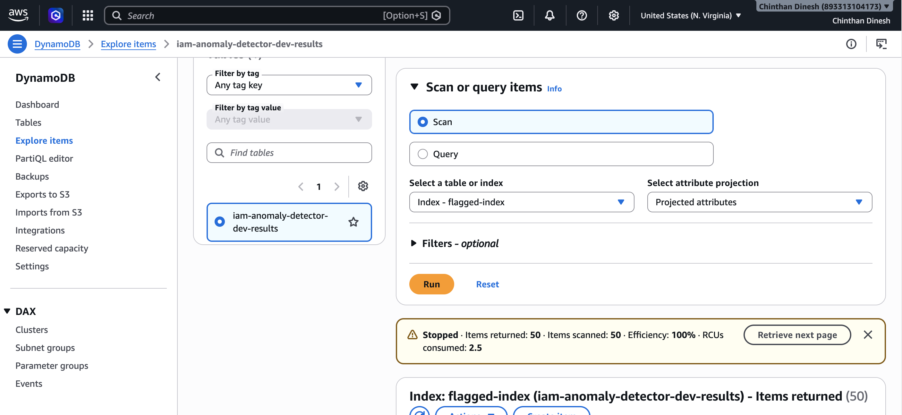
The flagged-index GSI returning real results against the live table — proof the String-type fix works.
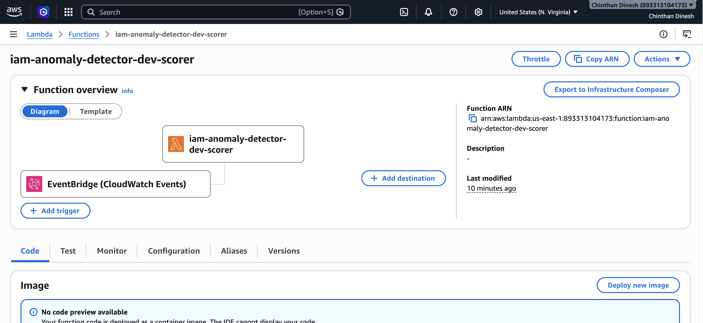
Lambda — the real function, deployed from the real ECR image, wired to its EventBridge trigger.
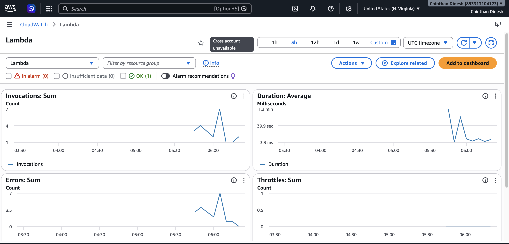
CloudWatch — 23 real invocations logged during the debugging + successful-invoke cycle.
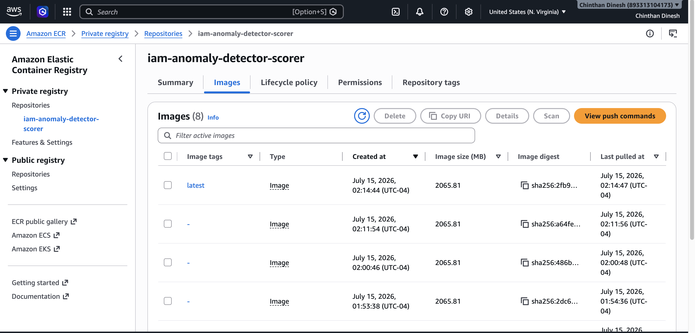
ECR — the real pushed image history, one entry per rebuild during the bug-fixing loop above.
All 11 resources plus the ECR repository were subsequently destroyed — no abandon-in-place exceptions on this module, everything was fully removed.
Specific things found by checking the code — and, this edition, by actually running it against real cloud accounts — not a generic disclaimer paragraph.